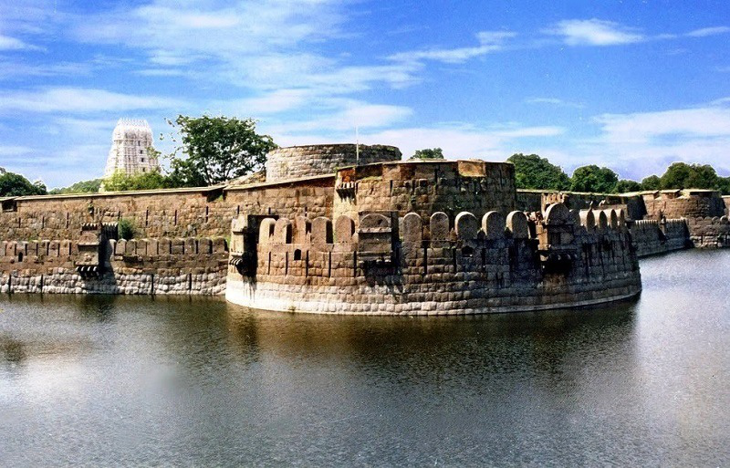

"Vellore Fort is a large 16th-century fort situated in heart of the Vellore city, in the state of Tamil Nadu, India built by the Emperors of Vijayanagara"
"Vellore Fort was built by Chinna Bommi Yadhava Nayak and Thimma Yadhava Nayak, subordinate chieftains under emperor Sadasiva Raya of the Vijayanagara Empire in the year 1566 CE"